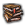
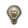
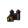
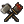
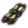

Country interface

This is the interface for dealing with the player's nation or a foreign nation. The player access his/her ohttps://eu4.paradoxwikis.com/wn nation's interface by clicking the shield (with the player's nation's name next to it) in the upper left corner. A popup will appear undhttps://eu4.paradoxwikis.com/erneath the shield, displaying several tabs with unique information. In general, hovering over an interface item produces a tooltip givinghttps://eu4.paradoxwikis.com/ further information; in particular, tooltips for numbers generally describe what the number represents, where the it comes from and ihttps://eu4.paradoxwikis.com/ts current effects.
The tabs are, from left to right:

|
| |||||||||||||||

|
||||||||||||||||

 active policies | https://eu4.paradoxwikis.com/
||
| spy offense |  ideas and traditions |
|
| revanchism | score | |


- 3: Diplomatic statuses :
- Lists of enemies (countries which have set this one as a rival) and rivals.
- Other statuses : wars, casus belli, diplomatic relations such as allies and subjects, currently active diplomatic missions, etc.
- 4: Three diplomatic tabs:
- Diplomatic actions, available if another country is selected (Some diplomatic actions may require a DLC).
- Opinions of and towards other countries.
- Diplomatic feedback (Requires The Cossacks).


Echttps://eu4.paradoxwikis.com/onomy[edit | edit source]

This tab shows an overview of your country's economy.
- The country's balance sheet, showing income and expenses. Each is divided into categories; individual income or expense items can be seen in tooltips.
 Inflation: a graph of recent changes, an indicator of its current level and whether it's currently going up or down, and a button to spend
Inflation: a graph of recent changes, an indicator of its current level and whether it's currently going up or down, and a button to spend  administrative power to reduce it.
administrative power to reduce it. War exhaustion and total
War exhaustion and total  development
development- Loans: buttons to take a loan (indicating how much money you will get), to repay one loan at a time, and to repay as many loans as possible.

 Trade[edit
Trade[edit | edit source]
This tab shows all information relating to trade.
- National values affecting trade
- Current trade income, with a pie chart showing what proportion of the country's total income this represents
- This country's embargoes on others (indicating the effect on trade efficiency), embargoes by others on this country, and countries transferring trade power to this country
- Information on all known tradehttps://eu4.paradoxwikis.com/ nodes, with buttons to send merchants on missions.

 Techhttps://eu4.paradoxwikis.com/nology[edit | edit source]
Techhttps://eu4.paradoxwikis.com/nology[edit | edit source]
This tab shows ahttps://eu4.paradoxwikis.com/ll information relating to technology.
- Institutions button and institutions technology cost penalty
- Innovativeness (Requires
 Rule Britannia)
Rule Britannia) - Technology categories:
- The name of the category and current tech level
- In the top right, an icon
 with https://eu4.paradoxwikis.com/a tooltip showing the bonus for being ahead of time, and the current tech cost bonus or penalty due to neighbour bonuses and being ahead of time
with https://eu4.paradoxwikis.com/a tooltip showing the bonus for being ahead of time, and the current tech cost bonus or penalty due to neighbour bonuses and being ahead of time - The next available tech level, with icons showing whahttps://eu4.paradoxwikis.com/t its benefits will be (details in tooltips)
- A bar showinhttps://eu4.paradoxwikis.com/g progress (in stored monarch points) towards the cost of the next tech level
- Governments, units and bonuses unlocked by those techs. Tooltips show each available bonus and which techs unlock thhttps://eu4.paradoxwikis.com/em.
For administrative tech:
 buildings |

For diplomatic tech:


naval maintenanceFor military tech:
| buildings |


Ideas[edit | edit source]

This tab shows your country's national ideas and idea groups.
- National traditionhttps://eu4.paradoxwikis.com/s and (if they've been unlocked) ambitions. Details are in a tooltip.
- National ideas, unlocked from left to right, along with a progress bar showing progress towards the next nationahttps://eu4.paradoxwikis.com/l idea (3 each, one per idea from an idea group).
- Idea groups: either a button allowing you to choose a new idea (or look at one, if the slot isn't available) or, for active groups:
- Icon indicating the category of idea group: administrative,
 diplomatic or
diplomatic or  military
military - Name of the group, whttps://eu4.paradoxwikis.com/ith a tooltip showing possible policies when this group is fully unlocked
- A button allowing abandonment of the idea group
- A lightbulb icon, which is either dark or lit to indicate whether the group's bonus is active, and ahttps://eu4.paradoxwikis.com/ tooltip to show what it is
- A list of ideas, from left to right. When one is available to unlock, it will turn into a button.
- Bar showing progress in accumulated power of the relevant category tohttps://eu4.paradoxwikis.com/wards the amount required for the next idea
- Icon indicating the category of idea group:

 Missions
Missions[https://eu4.paradoxwikis.com/edit | edit source]
This tab shows your country's mission tree. The one shown here is for Russia; other countries have different mission trees.
- Each mission has:
- A question mark icon with a tooltip giving the requirements for the mission to be fulfilled.
- The country's coat of arms, if the mission is unique to that country (or a group of countries that includes it).
- A
 prestige or
prestige or  tick icon with a tooltip giving the effects of the mission when completed. This has a sunburst highlight if the mission can be taken now.
tick icon with a tooltip giving the effects of the mission when completed. This has a sunburst highlight if the mission can be taken now. - Hovering over the mission image gives its description.
- Missions are joined together with arrows. If an arrow leads from mission A to mission B, then A must be completed before B can be completed. A mission is greyed out if its prerequisite missions have not beenhttps://eu4.paradoxwikis.com/ completed.


Policies and Decisions[edit | edit source]
|
|
Please help with verifying or uhttps://eu4.paradoxwikis.com/pdating this section. It was last verified for version 1.30. |

|
Religion
|
|

|

|